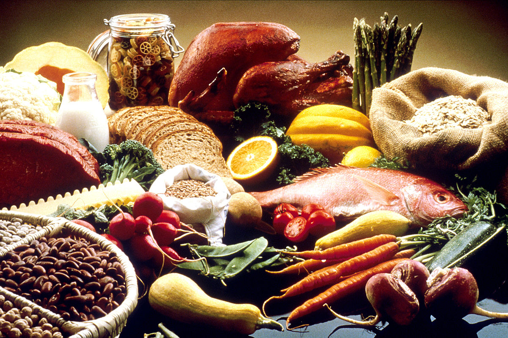

<!DOCTYPE html>
<html ng-app="JSFoodApp">
  <head>
    <meta charset="utf-8">
    <meta name="viewport" content="initial-scale=1, maximum-scale=1, user-scalable=no, width=device-width">
    <title></title>

    <link rel="manifest" href="manifest.json">

    <!-- un-comment this code to enable service worker
    <script>
      if ('serviceWorker' in navigator) {
        navigator.serviceWorker.register('service-worker.js')
          .then(() => console.log('service worker installed'))
          .catch(err => console.log('Error', err));
      }
    </script>-->

    <link href="lib/ionic/css/ionic.css" rel="stylesheet">
    <link href="css/style.css" rel="stylesheet">

    <!-- IF using Sass (run gulp sass first), then uncomment below and remove the CSS includes above
    <link href="css/ionic.app.css" rel="stylesheet">
    -->

    <!-- ionic/angularjs js -->
    <script src="lib/ionic/js/ionic.bundle.js"></script>

    <!-- Firebase and angular fire-->
    <script src="js/firebase-web.js"></script>
    <script src="js/angularfire.js"></script>

    <!-- cordova script (this will be a 404 during development) -->
    <script src="cordova.js"></script>

    <!-- your app's js -->
    <script src="js/app.js"></script>
    <script src="js/services.js"></script>
    <script src="js/controller.js"></script>

  </head>
  <body>
     <ion-nav-bar class="bar-dark" align-title="center">
      <ion-nav-back-button> </ion-nav-back-button>
    </ion-nav-bar>

    <ion-nav-view></ion-nav-view>
    <!-- Templates -->

    <!-- home.html -->
    <script type="text/ng-template" id="home.html">
      <ion-view view-title="JSFoodApp">
        <ion-content class="myContent">
          <div class="row">
              <div class="col">
                
              </div>
          </div>
          <div class="row">
              <div class="col">
                <a class="button button-full button-outline" ui-sref="recList"><p class>View Recipes</p></a>
              </div>
          </div>
          <div class="row">
              <div class="col">
                <a class="button button-full button-outline" ui-sref="edit"><p class>Edit Recipes</p></a>
              </div>
          </div>
          <div class="row">
              <div class="col">
                <a class="button button-full button-outline" ui-sref="add"><p class>Add Recipes</p></a>
              </div>
          </div>
          <div class="row">
              <div class="col">
                <a class="button button-full button-outline" ui-sref="del"><p class>Delete Recipes</p></a>
              </div>
          </div>
        </ion-content>
      </ion-view>
    </script>
    <!-- add.html -->
    <script type="text/ng-template" id='add.html'>
      <ion-view view-title="Add a recipe">
        <ion-content>
          <div class="list list-inset" ng-controller="addController">
            <label class="item item-input item-stacked-label myBorder">
              <span class="input-label">Recipe name</span>
              <input type="text" ng-model="recName">
            </label>
            <label class="item item-input item-stacked-label myBorder">
              <span class="input-label">Ingredients</span>
              <textarea rows="10" cols="10" ng-model="recIngredients"></textarea>
            </label>
            <label class="item item-input item-stacked-label myBorder">
              <span class="input-label">Preparation directions</span>
              <textarea rows="10" cols="10" ng-model="recDirections"></textarea>
            </label>
            <!--button for submition-->
            <div class="item button button-block button-positive" ng-model="addButton" ng-disabled="!recName || !recIngredients || !recDirections" ng-click="submitRecipe()">
              Add recipe
            </div>
          </div>
        </ion-content>
      </ion-view>
    </script>
  <!-- recipe list -->
  <script type="text/ng-template" id="recList.html">
    <ion-view view-title="Choose Recipe">
      <ion-content>
        <ion-list ng-controller="listController">
          <ion-item ng-repeat="recipe in recipes" class="recListing">
            <a ui-sref="singleRecipe({id:recipe.$id})" nav-direction="center"><h2>{{recipe.recipeName}}</h2></a>
          </ion-item>
        </ion-list>
      </ion-content>
    </ion-view>
  </script>
  <!-- single recipe-->
  <script type="text/ng-template" id="singleRec.html">
    <ion-view view-title="Recipe">
      <ion-content>
        <div ng-controller="recipeController">
          <h4>{{singleRecipe.recipeName}}</h4>
          <h4>Ingredients</h4>
          <ion-list type="inset-list">
            <ion-item ng-repeat="ing in ingList">
              {{ing}}
            </ion-item>
          </ion-list>
          <h4>Directions</h4>
          <ion-list type="inset-list">
            <ion-item ng-repeat="prep in prepList">
              {{prep}}
            </ion-item>
          </ion-list>
        </div>
      </ion-content>
    </ion-view>
  </script>


  </body>
</html>
